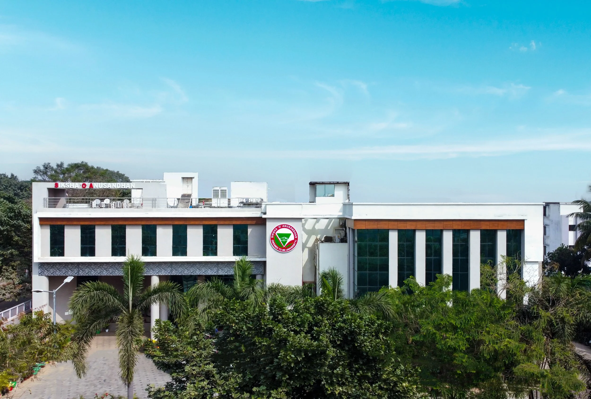

Everything you need to plan your visit to Bhubaneswar for the conclave: venue, accommodation, and a little something about the city.
Siksha 'O' Anusandhan (Deemed to be University)
SUM Hospital Road, Shampur, Kalinganagar,
Bhubaneswar, Odisha 751029

Invited delegates and presenters are recommended to book suitable accommodation at their discretion. The following hotels are located near the venue.
K-8, opposite SUM Ultimate Medicare, 1230, Ghatikia, Kalinganagar, Bhubaneswar, Odisha 751029
Walking distance from the venue
Plot No. 789/1328, near SUM Hospital Road, Durga Madhab Nagar, Shampur, Bhubaneswar, Odisha 751029
Short drive from the venue
Booking tip: July is shoulder-season for Bhubaneswar. Reserve early to lock in availability close to the venue; the conclave secretariat is happy to share a list of preferred-rate properties on request.
Nestled in Odisha, Bhubaneswar — the Temple City of India — blends over 2,000 years of Kalinga heritage with a thriving Smart City and premier academic institutions. Here's a glimpse of what awaits you.
Over 700 temples spanning the 7th–13th centuries dot the Old Town. Lingaraj, Mukteswar, Rajarani and Parasurameswar are all within a short drive of the venue.
Home to IIT Bhubaneswar, AIIMS, NISER, CSIR-IMMT, ICT-IOC and SOA University — one of India's fastest-growing centres for education, research and technology.
Konark Sun Temple (UNESCO) and Puri's beachfront are 1.5–2 hours away. The Odisha State Museum and Tribal Art Museum are excellent half-day options within the city.
A short note on Bhubaneswar - the Temple City and Smart City capital of Odisha - and how to make the most of your time outside the conclave hall.
Bhubaneswar's Old Town is dotted with sandstone temples spanning the 7th to 13th centuries - Lingaraj, Mukteswar, Rajarani and Parasurameswar are within a short drive of the venue.
Try Odia staples like dalma, chenna poda and macha besara at local restaurants in Kalinganagar and Saheed Nagar. Conclave dinners feature regional specialities.
Konark Sun Temple (UNESCO World Heritage) and Puri's beachfront are within 1.5-2 hours by road. The State Museum and Tribal Art Museum offer concentrated half-day visits.
Adda: In eastern India, an adda is an unhurried, free-flowing conversation - usually around chai or coffee. We hope the conclave is exactly that, in the best sense, between sessions.